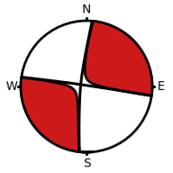
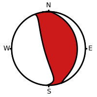
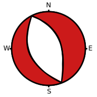
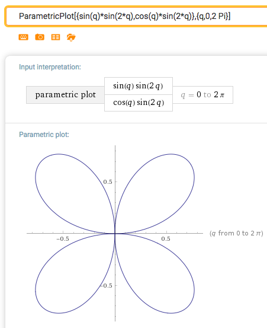

Chapter 6 Radiation pattern from the earthquake source
From this chapter you are expected to learn:
-
1.
The mathematical description of simple earthquake sources
-
2.
The radiation pattern in the far-field
-
3.
How to retrieve the focal mechanism of an earthquake
6.1 The double couple force equivalent
Fault motion can be considered as a discontinuity of displacement across a surface (dislocation) within an elastic body, which induces a perturbation and a re-arrangement of the surrounding medium. If the displacement is relatively impulsive, waves can be generated as a consequence of disequilibrium dynamics (change of momentum). In the 50’ there was some controversy about the precise mathematical significance of a dislocation and how to describe the source of perturbation that it would induce. Although many elastodynamic solutions had been obtained already in the 19th century and the beginning of the 20th century (Lamb, 1904), those were mostly concerned with the response to a single unidirectional force applied at a point. This type of simple source would correspond, for example, to a falling object (a meteor which hitting the surface of the Earth) and the solutions would allow to compute the triggered waves. Clearly the dislocation associated to earthquake faulting constitutes a more complex source of perturbation. Because elastodynamic solutions were traditionally derived in the presence of force impulses, there were discussions about what combination of forces could best describe an earthquake. Because the earthquake corresponds to an release of internal stress, there should be no net change in momentum (contrary to the case of a falling meteor). One proposal was to use a force couple: two equal forces applied in the opposite directions in the vicinity of a point, but with an infinitesimal offset. In fact, it was shown by Burridge and Knopoff (1964) that the simplest mathematical description of an earthquake source requires at least two force couples, i.e., the double couple solution. The elegant and rigorous demonstration was done by integrating the displacement discontinuity in the solution to the momentum equation (c.f. Aki and Richards book chapter 4, 1980), and showing that it was equivalent to a system of four forces resulting in no net change of momentum or moment. We develop here a more intuitive derivation, starting from remarking that an anelastic stress drop takes place on a bound source surface in correspondence to an earthquake. Let be the elastic stress, and the non-elastic perturbation (also known as the stress glut), resulting in a total stress . The stress glut is the perturbation of stress resulting form slip motion on a fault or crack. For example, as a failure occurs the fault will slip and release a given amount of shear stress. The perturbation due to fault slip can be introduced in a model of elastic behaviour by imposing a boundary condition on the fault surface. In this case there are two possible options: (1) impose a displacement condition on the fault or (2) impose a stress condition on the fault. The two options are equivalent and produce the same result, the choice of one or another depends on what is more convenient for the solution of the problem. Using the change of momentum equation we may write
| (6.1) |
where is mass density, is the component of particle displacement vector , the stress due to elastic strain, the stress due anelastic strain (including the fault slip), the component of the body forces vector . Assuming that the fault normal direction is , and that the stress glut will affect the shear stress componenet (and, due to symmetry, also ) alone, we can write the explicit cases:
| (6.2) |
(the component does not have any perturbative term because there is no contribution ). Now let’s chose a frame of reference such that the fault is centered at . The rupture (or the stress glut) extends over a surface area of zero thickness. Although the source area is distributed, it will look like a point from a faraway distance; we can treat it as a point source. However, to account for net change of stress within the volume surrounding the extended source area, we will multiply the stress glut amplitude by when using the point source model. Finally, if we are looking at periods which are much longer than the duration of the source, the latter will look like an impulse in time, and we choose as the origin time of the earthquake. To describe a source that is located at a point, and which has zero thickness, we will use the Dirac delta function : a generalized function or distribution introduced by the physicist Paul Dirac. It is used to model an idealised function equal to zero everywhere, except at , and whose integral is equal to one. The Dirac function, and its derivative can be symbolically represented as
andFinally, with the above assumptions our source function can be mathematically equated to :
| (6.3) |
where is the magnitude of stress drop; accessorily, has dimensions of a moment (N m), we will hereafter call it seismic moment and re-name it . Substitution of into Equation 6.4 yeilds:
| (6.4) |
By inspection, as the source terms and are next to body forces and , they must have same dimensions and therefore correspond to forces. In fact, because of the derivative in the first, and in the second, they correspond to two force couples which exert an equal and opposite torque at point source location . Indeed, the representation usually sketched for such system of forces is (Figure 6.1):
6.1.1 Stereonet representation of focal mechanisms
According to figure 6.1, the system of forces corresponding to a double couple will radiate a P-wave which is either dilational (tension) or compressive depending on the quadrant of the (x,z) plane. As a consequence, looking at the sign of the first arrival at a number of stations distributed in various locations around the earthquake source, one can deduce the type of focal mechanism. For a better representation of the focal mechanism in the 3D context of a spherical Earth, the relative position of each seismic station relative to the earthquake source can be identified on a stereonet projection. The stereonet is the graphic representation of an imaginary half-sphere located below the earthquake source. An equivalent, symmetric half-sphere can be represented also under each seismic station. Depending on the station/earthquake unique relative position, the ray will pierce the focal sphere at a unique point, also called a POLE. This can be seen in figure (6.3). Seen from above (map view), the stereonet will look like a circle with different points indicating the poles or points of intersection.
When a number of stations at different locations are available, the first arrivals allow to map on the stereonet the quadrants where the first motion indicates a compressive or a tensile impulse. As a result, the mechanism of the earthquake can be determined, as illustrated in figure (6.5).
 PURE STRIKE-SLIP
Date-Time (UTC): 2015-02-13 18:59:12
Location: REYKJANES RIDGE
Latitude, Longitude: 52.700, -32.7400
Magnitude: 7.1 MW (Global CMT Project)
Depth: 25.17 km
Author: Global CMT Project
Catalog, Contributor: GCMT, GCMT
 MOSTLY DIP-SLIP (THRUST)
with some strike-slip
Date-Time (UTC): 2014-04-03 02:43:13
Location: NEAR COAST OF NORTHERN CHILE
Latitude, Longitude: -20.571, -70.493
Magnitude: 7.7 mww (us)
Depth: 22.4 km
Author: us
Catalog, Contributor: NEIC PDE, us
 PURE DIP-SLIP (NORMAL)
Date-Time (UTC): 2016-10-30 06:40:19
Location: CENTRAL ITALY
Latitude, Longitude: 42.855 °, 13.088 °
Magnitude: 6.6 mww (us)
Depth: 10.0 km
Author: us,gcmt
Catalog, Contributor: NEIC PDE, us
Exercises
Exercise 6.29.
–Plot poles and find mechanism
The following stations have recorded either tensile (NEGATIVE) or compressive (POSITIVE) first arrivals
from an earthquake:
Q1-1971
NEGATIVE:
16, 28
93, 14
356, 54
POSITIVE:
12, 72
349, 54
54, 71
107, 43
128, 9
302, 26
259, 49
201, 56
181, 50
300, 58
144, 56
180, 89
The first line indicates the year of the earthquake.
The first column indicate the TREND, and the second line indicates the PLUNGE of the
back-propagated ray.
Following the instructions on the lecture video, resolve graphically the fault plane
and the auxiliary plane.
Usually we use a transparency and printed paper with a pin for this exercises.
This year we will be using an online app to solve the same exercise while learning online.
For this, you can use the app at the following site:
https://app.visiblegeology.com/stereonetApp.html.
and paste the TREND and PLUNGE values of the earthquake for all stations.
What is the indicative strike and dip of the fault plane and auxiliary plane?
What is the focal mechanism?
Follow the same procedure for the following earthquakes:
Q2-1976
NEGATIVE
60 69
56 67
52 65
52 71
48 68
230 52
POSITIVE
34 72
39 68
132 66
207 67
224 60
238 48
214 53
242 50
252 56
266 56
277 60
282 59
285 61
11 63
356 64
339 60
333 63
334 66
304 65
——————–
Q3-1979
NEGATIVE
28.6 49
25.9 74.9
46.1 75.6
263.4 75.2
257.8 61.2
209.6 62.2
POSITIVE
306.5 45.6
317 59.3
314.7 63
330.6 62.5
345.9 64.4
351.7 63.7
2.9 63.8
348.2 76.1
110.8 69.8
106.5 60.4
122.7 44.5
152.9 55.2
158.4 62.6
299.5 70
303.9 72.7
298 63.7
303.3 65.5
————————
Q4-1978
NEGATIVE
55.3 61.5
56.8 59.3
59.6 58.9
65.3 61.3
62 66
100.3 54.7
137 60.4
158.1 67.8
165.3 57
174.9 54.6
181.2 55.8
186.6 49.6
186 67
176.1 65.6
POSITIVE
60 69
56 67
52 65
52 71
48 68
34 72
39 68
132 66
207 67
224 60
238 48
214 53
242 50
252 56
266 56
277 60
282 59
285 61
11 63
356 64
339 60
333 63
334 66
304 65
230 52
Exercise 6.30.
In the far field, the P-wave radiation results in a radial component of displacement the following amplitude as a function of the azimut:
where is the distance from the source, and are the angles with respect to the slip plane as indicated below
Taking and , find a parametric representation of the amplitude of as a function of the angle . You can use wolframalpha in your browser with the ParametricPlot function to represent it.
Exercise 6.31.
Reconstruct the focal mechanism of the Tohoku, 2011 Mw 9.1 earthquake.
You will use the following material, and connect to the the site
https://app.visiblegeology.com/stereonetApp.html.
This is the same app as used for exercise 1. As noted above, a video in the lecture material
explains how to use the app.
\csvautotabular
toff.csv
 \csvautotabularbackaz.csv
\csvautotabularbackaz.csv
Answers to exercises
Answer to Exercise 6.29
–focal mechanisms from list of stations for 4 quakes
1. solution on “paper":
Let’s go through the following example step by step.
First identify a possible plane and use the corresponding meridian to highlight it, and note the position of its pole:
Then rotate again the transparency until a second plane is identified, crossing through the pole, and highlight the corresponding meridian:
Finally, the resulting mechanism is
2. solution using online app: This is what the online stereonet reveals for Q1 and Q2 if the station’s back-azimut and take-off angles are give correctly:
The corresponding solutions for the fault/auxiliary plane are:
Q1:
strk dip lambda type
310, 65, 90, thrust
130, 25, 90, thrust
Q2:
176, 80, 195, strike-slip RL
83, 5, 350, strike slip LL
Q3:
9, 90, 180, SS RL
99, 90, 0, SS LL
Q4:
This case has no solution leaving the stations completely separated.
16, 85, 90, dip slip
195, 5, 90, thrust
In this case, there is an alternative solution too
78, 66, 25, SS LL
337, 67, 154, SS RL
Answer to Exercise 6.30
As indicated in the figure, if the ray path at an angle from the fault normal direction , any point on the ray path will verify . The relative amplitude of the P-wave in that direction is , therefore a parameteric representation can be obtained using:
and representing the loci of when varies from 0 to . Using wolframalpha we otain:
Furthermore, note that the direction of the first impulse is in the ray direction, toward the stations for quadrants and (red lobes), and toward the source (clear lobes) for and :
Answer to Exercise 6.31
First let’s detail the positioning of a single station on the focal sphere. Take the example of station KWAJ:
-
•
From the table of stations, its back-azimut is and the epicentral distance is .
-
•
From the table of take-off angles, a distance corresponds to a take-off angle of .
-
•
From the waveform figure the first vertical motion appears to be negative.
-
–
Because vertical is positive down, a negative means that the ground motion is UP.
-
–
Projection of UP motion onto the upwards ray path at the station results in a positive motion in the ray direction. Therefore KIP is in the compressive quadrant.
-
–
Similarly, all stations having a negative vertical initial motion correspond to UP motion (compressive quadrant), and all those which have a poitive one correspond to DOWN (tensile quadrant).
-
–
Often times the three components of motion at the station are available. They can be rotated and projected onto the raypath before plotting the waveform. In those cases, a positive first motion would indicate that the station is in the compressive quadrant –just the opposite as in our case, where we plot the vertical component alone!
-
–
To put it as Anders Sandberg, of Oxford’s Future of Humanity Institute "If your job can be easily explained, it can be automated". Don’t have a robot steal your job!
-
–
-
•
To sum up, for station KWAJ we need only these 3 pieces of information: back-azimuth=; take-off=; quadrant=compressive. We are now ready to plot KWAJ onto the stereonet, in two simple steps:
Step 1 (Left sketch): Mark the North on the transparency. Locate the back-azimuth on the transparency, by counting anti-clockwise from the North mark. Step 2 (Right sketch): Rotate the transparency until the back-azimuth mark is on the equator line. At this point, count the take-off angle from the center of the stereonet (in this case, 27), and plot there the bullet corresponding to the station (in this case compressive = full bullet). After doing this for all stations, find the two orthogonal planes that separate the full bullets from the empty bullets. Rotate the transparency until you identify one meridian which separates compressive from tensile stations, draw the corresponding plane along the meridian, and its pole at . Then check whether any second plane exists passing through the first pole, which also separates the stations:
(Note that if the fault has a strike component –not the case for this example– then no single plane will separate all the stations. You’ll obtain a fault plane and auxiliary plane which cross each other, separating the stations in two compressive and two tensile quadrants, as in the "PURE STRIKE SLIP" example of Exercise 6.29). Remember that each plane should pass through the pole of the other plane. The pole is located counting 90 on the equator line, when the plane sits on its meridian. Finally, you would obtain the following representation:
"Tohoku" earthquake
Date-Time (UTC): 2011-03-11 05:47:32
Location: OFF EAST COAST OF HONSHU, JAPAN
Latitude, Longitude: 37.520, 143.050
Magnitude: 9.1 MW
Depth: 20.0 km
Author: Global CMT Project
Catalog, Contributor: GCMT, GCMT